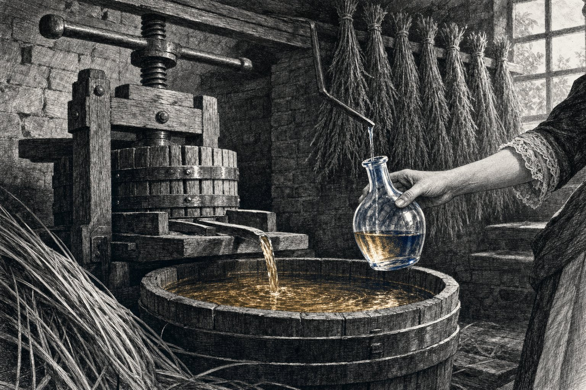
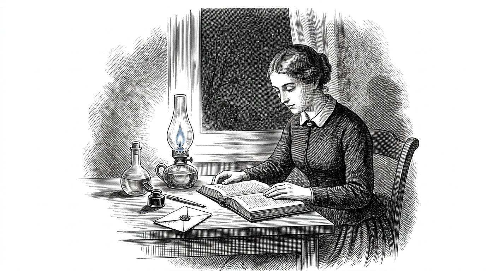
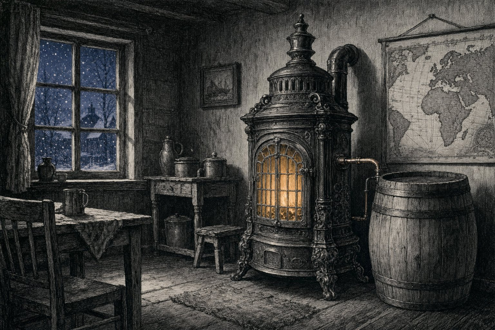
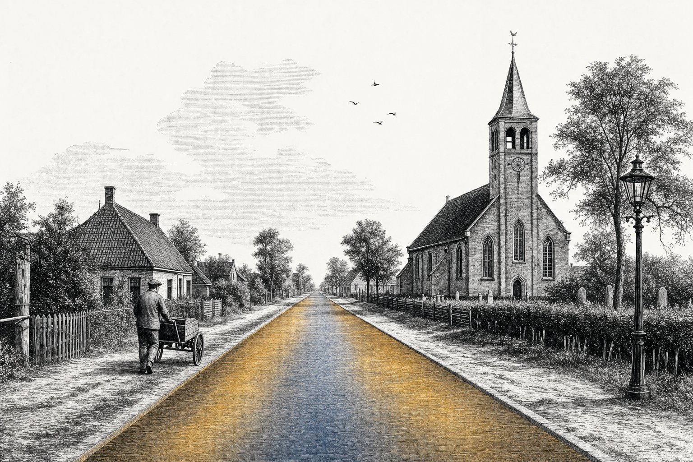
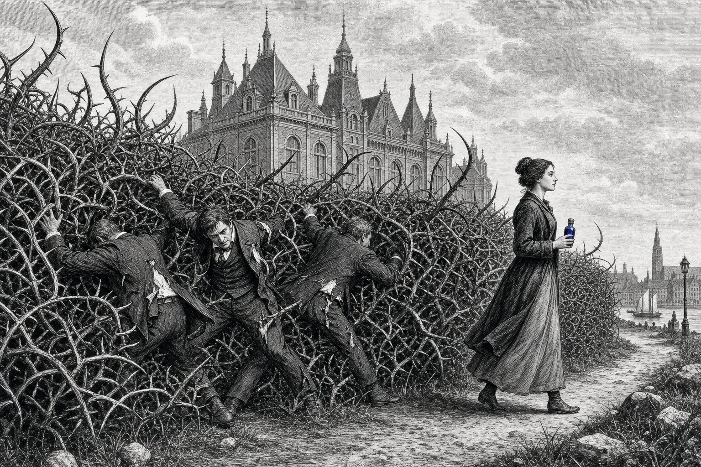
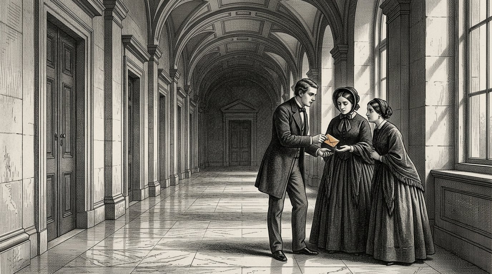

Prologo
Il liquido che nessuno aveva visto
Prologo — pronunciato da Kosus
Io sono Kosus. Quando aprirete questo libro, non sarò più tra voi. L’ho affidato ad Alkion perché lo custodisse fino a quando fosse giunto il momento, e Anthea lo ha messo per iscritto insieme a lei.
Nel Libro Uno vi ho dato le quattro colonne e vi ho mostrato le cinque navi. Vi ho parlato del sole all’equatore e della principessa che si risveglia. In questo quarto libro si tratta di un’unica cosa che negli altri libri passava tra le righe, ma non è mai stata scritta: il liquido che proviene dall’erba quando la spremete a freddo.
Lo chiamiamo idrolizzato. Non è una cosa sola, ma molte cose allo stesso tempo. È combustibile per la vostra stufa quando i fiumi del gas gelano. È legante per le strade che posate sotto i piedi dei vostri figli. È materia prima per la plastica che dura cent’anni invece di cinque.
È una sola risposta a tre domande cui finora avete risposto con tre diverse linee di approvvigionamento. Chi risponde a tre domande con un’unica risposta non diventa più povero, ma meno dipendente. Chi è dipendente subisce decisioni. Chi è meno dipendente decide da sé. Questa non è tecnica. Questa è sovranità.
Nel Libro Uno ho fatto ascoltare ad Alkion la tempesta. Ho fatto arrivare Petros al molo. Vi ho mostrato il sole all’equatore e la nave che naviga con il proprio combustibile. Questo quarto libro è il foglietto illustrativo di quei racconti. Chi lo legge non sa soltanto che il sole funziona. Sa anche come.
E sa, cosa più importante, perché non funziona senza reciprocità. La bilancia di Timaris qui pesa molto. Un liquido proveniente dall’erba di un altro paese non è petrolio che comprate. È una stretta di mano in vetro.
Kosus dice:ciò che comprate tre volte da tre diversi signori, potete anche costruirlo una volta sola con un unico vicino. Il primo modo vi rende dipendenti. Il secondo modo vi rende famiglia.
Prefazione
Di Jacobus van Merksteijn
Questo è il Libro Quattro della Kosaris. Segue il Libro Uno, nel quale sono state poste le quattro colonne e le dodici parti hanno attraversato il mondo, dal porto dimenticato fino alla scelta lasciata al lettore. Si affianca al Libro Due, che trattava della Diakrisis — la distinzione tra ciò che è stabilito e ciò che è stato assunto. E al Libro Tre, nel quale Anthea mostrava come si prepara un bambino al giudizio autonomo.
Questo quarto libro parla del clima, ma non nel modo in cui ne scrivono i giornali. Parla di una sola sostanza che proviene da una sola erba e risolve tre problemi insieme: l’energia che mantiene calda la vostra casa, la strada sulla quale i vostri figli camminano per andare a scuola e la plastica nella quale vengono avvolti i loro libri. Quando una sola sostanza risolve tre problemi insieme, cambia più della tecnica. Cambia chi decide.
I personaggi non sono nuovi. Alkion la conoscete dalla Parte VI del Libro Uno, dove udì la tempesta che nessun altro udì. Petros lo conoscete dalla Parte VIII, dove giunse al molo di Malta presso il vecchio Cavaliere. Demira sta accanto al suo forno come sempre. Anthea è ormai adulta ed è colei che passa questo libro di mano in mano.
Chiamo per nome una cosa che i giornali preferiscono evitare. Noi chiamiamo il liquido idrolizzato. Proviene da un’erba gigante chiamata Juncao e da un albero chiamato Moringa. Viene prodotto mediante spremitura a freddo, non riscaldando e non fermentando. Viene dalla terra senza spezzare la terra. E viene dal sole all’equatore, dove si trova e dove rimane.
Chi legge questo libro e lo fa leggere a un ministro, non cambia il ministro. Chi lo legge al proprio vicino, forse cambia il villaggio. Come sempre con questi libri: il potere risiede nel passarlo ad altri, non nel convincere chi vuole rimanere sordo.
Malta, novembre 2026.
Parte 1
LA BEVANDA DALL’ERBA

Dove Alkion ritorna al porto, Demira le insegna che cosa si ricava dall’erba gigante, e si spreme la prima bottiglia di idrolizzato.
Il ritorno di Alkion

Alkion aveva compiuto ventisei anni. Aveva lavorato per sei estati nel sud, nelle piantagioni di Juncao, ed era tornata a casa d’inverno perché Kosus le aveva scritto che voleva mostrarle qualcosa. Quando arrivò, non lo trovò più al molo. Era morto tre settimane prima, e Demira non aveva potuto farglielo sapere perché la lettera era partita troppo tardi.
La prima mattina dopo il suo arrivo, sedeva sulla panca accanto al forno e guardava il porto. Demira uscì con una tazza di latte caldo e disse: mi ha lasciato qualcosa per te. Si trova in fondo al forno.
Alkion la seguì all’interno. Nella stanza sul retro c’era una cassa di legno, e sulla cassa una lettera. La lettera era scritta con la grafia di Kosus. Vi era scritto: Alkion, per sei anni nel sud hai imparato che cosa può fare l’erba. Ora è tempo di imparare che cosa è l’erba. Apri questa cassa quando sarai di animo sereno.
Alkion aprì la cassa. Dentro c’era una pressa a vite di legno, piccola ma pesante, delle dimensioni di quelle che un tempo si usavano per l’uva. E una bottiglia di vetro, vuota. E un quaderno rilegato in pelle. Sulla prima pagina, con la grafia di Kosus, c’era scritto: l’idrolizzato.
Alkion lesse le pagine. Lesse lentamente, perché Kosus scriveva come parlava, e lei ne sentiva di nuovo la voce. Aveva scritto come si spreme l’erba a freddo, senza il calore che spezza la dolcezza. Aveva scritto quali piante vi si inseriscono, affinché l’erba si nutra da sé e il liquido rimanga puro. Aveva scritto che cosa ne scaturisce: un liquido che brucia senza fumo, che si indurisce senza cemento, che prende forma senza essere colato.
Alkion chiuse il quaderno. Guardò Demira. Disse: non è una cosa sola. Sono tre cose insieme. Demira disse: è esattamente ciò che mi ha detto quattro sere prima di morire. Disse: se qualcosa è una cosa sola che fa tre cose insieme, non è tecnica. È una chiave.
Alkion ripose la lettera sulla cassa. Disse a Demira: allora domani inizierò a spremere.
Kosus dice:chi eredita una chiave non eredita una serratura. Eredita il dovere di cercare quali porte si sono aperte nel suo tempo e quali sono rimaste chiuse.
E nessuno aveva mentito.
La spremitura a freddo

Demira pensava che la spremitura avrebbe somigliato a quella dell'uva. Alkion spiegò che era diverso. Con l'uva si pressa per estrarne il succo. Con Juncao si pressa per separare la struttura senza spezzarla. Se si pressa a una temperatura troppo alta, il liquido si ossida e se ne perde la metà. Se si pressa a una temperatura troppo bassa, non esce nulla. La temperatura deve essere quella di una tiepida mattina d'estate.
Tesero l'erba nella pressa come diceva lo scritto: prima schiacciata tra due panni, poi disposta a strati con una manciata di foglie di Moringa provenienti da un fascio essiccato che Kosus aveva lasciato. La Moringa faceva qualcosa che senza di essa non si comprende: teneva separate le particelle. Senza Moringa, si raggrumavano e il liquido diventava torbido. Con Moringa, restava limpido come l'ambra.
Girarono la vite. Ci volle un'ora prima che arrivasse la prima goccia. Ci volle un'altra ora prima che un sottile filo scorresse nel bicchiere. Alla fine della giornata avevano mezza bottiglia.
Demira disse: è tutto? Alkion disse: questo viene da una manciata. Se pressate una balla, ottenete mezzo litro. Se pressate un capannone pieno, ottenete cento litri. Se pressate un campo, ottenete tremila.
Demira guardò la bottiglia. Disse: in che cosa brucia? Alkion disse: non ancora in ciò che abbiamo. Devo costruire una stufa che ami questo liquido. Per quarant'anni abbiamo costruito stufe che amano il gas e amano il carbone. Questo liquido ha bisogno della sua stufa. Sarà la prossima settimana.
Demira disse: e il resto? Alkion disse: questa è la prima. Sollevò la bottiglia contro la luce e vide come il liquido racchiudesse sfumature che passavano dal giallo all'ambra fino a un quasi blu quando si inclinava la luce. Disse: Kosus disse che chi vede per la prima volta questo liquido deve tacere per tre respiri. Tacquero per tre respiri.
Allora Demira disse: nella mia vita ho visto il pane nascere dall'impasto e i bambini dalle donne. Questa è la terza cosa che mi stupisce.
Kosus dice:ciò che si ottiene a freddo da qualcosa che cresce conserva la forza di ciò che è cresciuto. Ciò che si ottiene a caldo perde la metà di ciò che era. Chi lo fa a freddo trattiene il sole. Chi lo fa a caldo lo spreca.
E nessuno aveva mentito.
La vicina che non ci credeva

La seconda giornata venne a dare un'occhiata la vicina di Demira. Si chiamava Marta e non faceva il pane, ma vendeva verdura al mercato. Aveva quattro figli ed era abituata ad avere un'opinione su tutto.
Marta vide la pressa e la bottiglia e disse: che razza di taverna stai allestendo? Demira disse: non è una taverna. È un liquido che brucia, lega e forma. Marta disse: se brucia, lega e forma, non è un liquido, è una menzogna.
Alkion non disse nulla. Prese un cucchiaio del liquido e lo versò in una ciotolina. Prese una candela dal tavolo e avvicinò la fiamma alla ciotolina. Il liquido prese fuoco. Bruciava con una fiamma blu uniforme, senza fumo, e sprigionava un calore che sentivi sul viso se stavi a una spanna di distanza.
Marta disse: è gin. Alkion disse: assaggia. Marta non osò. Alkion immerse il dito nella ciotolina e lo leccò. Disse: non sa di nulla. Il gin sa di gin. Questo sa come sa l'acqua: di niente.
Marta disse: allora è olio. Alkion disse: l'olio puzza. Questo no. Annusa. Marta annusò. Disse: è vero, non ha odore.
Marta si sedette sulla panca. Disse: e allora che cos'è? Alkion disse: è ciò che nell'erba costruisce l'erba. Ora lo abbiamo estratto senza riscaldarlo. È antico. Ogni pianta lo possiede. Non abbiamo mai chiesto se volesse uscire senza che noi lo mettessimo a bollire.
Marta rifletté. Disse: e l'erba stessa? Ne rimane qualcosa? Alkion disse: dopo la spremitura l'erba diventa mangime per le mucche. Ciò che resta una volta dato come mangime viene arato di nuovo nel campo dove cresceva l'erba. Non va perduto nulla. La mucca lo mangia e la terra lo riceve indietro. Noi prendiamo soltanto il liquido, e questo è ciò che ne facciamo qui.
Marta si alzò. Disse: se è vero ciò che dice, allora non abbiamo riflettuto per quarant'anni. Demira disse: è proprio ciò che Kosus direbbe. Marta disse: e dov'è Kosus adesso? Demira disse: morto. Marta disse: è un peccato. Avrei voluto chiedergli perché non ce l'abbia detto trent'anni fa.
Alkion disse: l'ha detto. Noi non abbiamo ascoltato. È diverso.
Kosus dice:chi non crede a una nuova sostanza perché non ne ha mai sentito parlare, non crede neppure al fuoco, alla birra o alle uova finché non li ha visti per la prima volta. La differenza tra incredulità e ignoranza è una sola dimostrazione sulla panca accanto al panificio.
E nessuno aveva mentito.
Il manoscritto di Kosus

Quella notte Alkion continuò a leggere il manoscritto di Kosus. Leggeva alla luce di una lampada alimentata dal liquido stesso, che aveva versato in una vecchia lampada a olio. La lampada ardeva più luminosa delle lampade a olio a cui era abituata, e senza il fumo dolce.
Kosus aveva scritto sei pagine su ciò che chiamava idrolizzato. La prima pagina riguardava il modo in cui lo si pressa. La seconda, ciò che se ne ricava. La terza, ciò che non si deve fare. La quarta, i partner all’equatore. La quinta, la siepe di spine intorno ai governanti. La sesta era una lettera che cominciava con: a chi riceverà questo dopo di me.
Nella terza pagina, su ciò che non si deve fare, stava scritto: non riscaldate il liquido fino a ottenere etanolo, a meno che non vi troviate in una situazione d’emergenza. L’etanolo è un passaggio intermedio che appiattisce ogni cosa trasformandola in combustibile. Quando producete etanolo, perdete ciò che rende speciale il liquido: la sua versatilità. Potete allora soltanto bruciarlo. Non potete più legare o formare.
Alkion depose il manoscritto. Aveva capito che cosa intendesse. La via frettolosa attraverso la crisi consisteva nel produrre etanolo e bruciarlo rapidamente nei vecchi motori. La via lenta consisteva nell’imparare che cosa fosse il liquido in sé e nel costruirvi con esso. La via frettolosa sarebbe finita sui giornali. La via lenta avrebbe raggiunto il secolo.
Proseguì con la quinta pagina, sulla siepe di spine. Kosus aveva scritto: chi tenta di far passare questo liquido a Bruxelles come combustibile viene respinto perché non rientra nelle categorie esistenti. Chi tenta di farlo passare come legante viene respinto perché non esiste alcuna procedura di omologazione. Chi tenta di farlo passare come materia prima per la plastica viene deriso perché la plastica è cattiva. Chi tenta di farlo passare contemporaneamente attraverso tutte e tre le porte viene mandato via da tre funzionari, ciascuno con il proprio fascicolo, che non parlano tra loro.
Kosus aveva scritto sotto: che fare? Girate intorno alla siepe. Costruite prima in un villaggio. Fatelo funzionare. Quando lo faranno cento villaggi, la siepe verrà da voi. Non aspettatela. Non verrà da sola.
Alkion chiuse il manoscritto. Pensò: è ciò che farò. Villaggio dopo villaggio.
Kosus dice:un manoscritto che ereditate da un maestro non è una bibbia. È una guida di viaggio. Chi legge la guida e non viaggia, non ha nulla. Chi viaggia senza guida, si perde. Chi legge e viaggia allo stesso tempo, arriva.
Parte II
E nessuno aveva mentito.
Parte 2
LA STUFA E LA BOTTE

In cui Alkion costruisce una stufa che ama l’idrolizzato, il villaggio rimane caldo d’inverno senza rivolgersi ai fiumi di gas, e il sindaco impara quale sia la differenza tra più economico e più sovrano.
La stufa per il nuovo liquido

Alkion trovò un vecchio fabbro dall’altra parte del villaggio. Si chiamava Wilm ed era in pensione da cinque anni. Aveva tre stufe nel suo capanno, che non aveva mai venduto perché ormai la gente aveva il gas.
Lei gli disse: ho un liquido che brucia senza fumo. Wilm disse: allora il vostro liquido è migliore delle mie stufe. Lei disse: le vostre stufe erano costruite per l’olio. Voglio convertirne una per questo liquido. Wilm disse: fatemelo vedere.
Gli portò una bottiglia. Versò un cucchiaio in una ciotolina e gli diede fuoco. Wilm guardò la fiamma azzurra e rimase in silenzio. Poi disse: quella fiamma ha la temperatura del buon carbone. Ma non ha la tendenza a restare in basso e a lasciare fredda l’aria sopra di sé. Riscalda sopra e sotto allo stesso modo. È diverso.
Alkion disse: che cosa significa questo per la vostra stufa? Wilm disse: significa che il condotto dei fumi può essere più piccolo. Che l’apertura del focolare può essere più grande. Che la camera termica può essere più profonda, perché la fiamma non soffoca da sé. Posso costruirne una in tre settimane. Ne volete una?
Alkion disse: ne voglio dieci. Wilm disse: che cosa volete farne, di dieci? Alkion disse: nove vicini e Demira. Se funziona da Demira e nove vicini la vedono funzionare, avremo cento ordini prima della fine dell’inverno. E allora avremo un villaggio che si regge sul liquido.
Wilm rifletté. Disse: e il liquido in sé? Quanto ne avete? Alkion disse: ora una bottiglia. L’anno prossimo un capanno. Fra tre anni un campo. Wilm disse: allora ve ne costruirò tre per questo inverno e sette per il prossimo. Ciò che ancora non avete, la stufa non può richiederlo.
Alkion annuì. Lei disse: siete il primo che incontro a non voler costruire più stufe di quanto liquido ci sia. Wilm disse: sono vecchio. Non ho più voglia di costruire qualcosa che non possa essere alimentato. L’ho fatto per trent’anni con il carbone. Ora voglio soltanto costruire ciò che brucia.
Kosus dice:un artigiano che è invecchiato e ha conservato la propria saggezza sa che è inutile fare più di quanto verrà usato. Un giovane artigiano con la stessa saggezza è una rarità. Cercatelo. Ditegli che lo riconoscete.
E nessuno aveva mentito.
Il primo inverno senza gas

Tre stufe furono installate per l'inverno. Una da Demira, una da Marta, una da Wilm stesso nel suo capanno. Alkion fornì a tutti e tre il liquido che quell'estate aveva spremuto dal campo dietro il villaggio, dove aveva piantato Juncao con il permesso del sindaco.
L'inverno arrivò presto. A novembre cadde la neve e il prezzo del gas aumentò come aumentava ogni anno quando accadeva qualcosa a est o a sud-est di cui nessuno era bene informato. I vicini di Demira si lamentarono con lei della loro bolletta. Demira disse: venite a sedervi da me, al caldo.
Vennero. Si sedettero nella panetteria che non funzionava più a gas. Guardarono la stufa, diversa dalla loro. Chiesero: quanto vi costa? Demira disse: mi costa l'erba che lasciamo crescere qui davanti alla porta. Mi costa una settimana e mezza di spremitura nella tarda estate. Mi costa una stufa acquistata una volta e che dura venticinque anni. Per il resto non mi costa nulla.
I vicini dissero: e la bolletta? Demira disse: non c'è nessuna bolletta. Non c'è nessun fornitore che mi chiami. Non c'è nessun prezzo che cambi quando accade qualcosa all'estero. C'è una bottiglia che ho spremuto io stessa. Quando la bottiglia è vuota, ne spremo una nuova.
I vicini rifletterono. Dissero: possiamo avere anche noi stufe simili? Demira disse: Wilm ne farà sette per il prossimo anno. Se vi iscrivete ora, sarete nella lista. Si iscrissero. Sette stufe furono prenotate nel giro di due giorni.
Il giorno di Natale c'erano tredici persone nella panetteria di Demira, perché a casa loro faceva troppo freddo e non volevano più pagare quanto la bolletta del gas chiedeva loro. Demira diede loro del pane e disse: l'anno prossimo sarete a casa vostra. Dissero: l'anno prossimo saremo a casa nostra.
Alkion sedeva sulla panca e osservava. Pensava: tredici persone. Questo è un villaggio. È un terzo degli abitanti. È abbastanza per convincere il sindaco che qualcosa deve cambiare.
Kosus dice:il primo inverno in cui un villaggio riscalda sé stesso senza i fiumi che non possiede, è il primo inverno in cui gli abitanti di quel villaggio decidono che cosa significa Natale. In tutti gli inverni precedenti, era stato deciso da persone che non conoscevano.
E nessuno aveva mentito.
Il sindaco e il conto

Il sindaco passò da Demira in gennaio. Era lo stesso sindaco che nel Libro Uno aveva imparato che un conto caduto sul fornaio era una bara. Era invecchiato e le sue spalle si erano incurvate un poco in avanti, ma i suoi occhi erano ancora altrettanto acuti.
Disse: Demira, ho sentito che a Natale avete avuto tredici persone in casa. Demira disse: ne ho avute sedici, se si contano anche i bambini. Il sindaco disse: perché? Demira disse: perché la mia stufa era calda e la loro no.
Il sindaco disse: è un atto degno di lode. Ma è anche un problema per me. Se ventitré famiglie lasciano questo villaggio perché non riescono più a pagare la bolletta del gas, perdo entrate fiscali. Se ventidue famiglie restano perché voi date loro da mangiare, perdo ugualmente entrate fiscali perché continuano a non pagare il gas.
Demira disse: allora venite da me per una soluzione, e non per una lamentela. Il sindaco disse: è esattamente per questo che sono qui. Qual è la vostra soluzione?
Demira chiamò Alkion. Alkion spiegò: se mettete cento famiglie sul liquido, insieme avranno per l'inverno un conto pari a nulla. L'erba cresce sulla terra che ci date in affitto. L'affitto è la vostra entrata fiscale. La pressa si trova nella casa comune, che vi appartiene. Il noleggio della pressa è la vostra entrata fiscale. Le stufe vengono fabbricate localmente da Wilm, e Wilm paga le tasse sul suo fatturato.
Il sindaco disse: dunque sostituite la bolletta del gas con l'affitto e il noleggio e il fatturato locale. Alkion disse: e con tre cose che la bolletta del gas non aveva. Manteniamo il denaro nel villaggio. Ci rendiamo indipendenti dalle oscillazioni dei prezzi. E abbiamo lavoro per sette persone che altrimenti non ne avrebbero.
Il sindaco rifletté. Disse: quanto mi costerà allestire tutto questo? Alkion disse: una stagione di terreno che ci date in comodato e un locale nella casa comune. Nient'altro.
Il sindaco disse: e quanto mi frutterà? Alkion disse: non posso dirvelo in cifre. Posso però pesarvelo su un'altra bilancia. Il vostro villaggio non si restringe più. I vostri giovani restano. I vostri anziani non muoiono di freddo. E la fabbrica più avanti, che vi fornisce l'elettricità, può chiedervi ciò che vuole senza che voi ne siate dipendenti.
Il sindaco guardò Alkion e disse: l'ho imparato da Demira vent'anni fa. Che la bilancia che quantitativamente sembra la migliore non è sempre la bilancia che sostiene il villaggio. Accetto la proposta.
Kosus dice:un sindaco che pesa il villaggio in base a ciò che il denaro produce, non vede ciò che il villaggio è. Un sindaco che pesa il villaggio in base a ciò che il villaggio sostiene, pesa con la bilancia di Timaris. Quella bilancia non si spezza con il maltempo.
Parte III
E nessuno aveva mentito.
Parte 3
LA VIA CHE SPLENDEVA DIVERSAMENTE

Dove il liquido non brucia più soltanto, ma lega anche, e dove un funzionario provinciale impara che una via è più del fornitore del suo asfalto.
Il legante di Wilm

Wilm arrivò un pomeriggio alla panetteria e aveva in mano un grumo che posò sul bancone. Disse ad Alkion: questo è il tuo liquido, mescolato con pietrisco e lasciato riposare per tre giorni. Ho pensato: se brucia, che cosa fa quando non brucia?
Alkion prese il grumo. Era duro come la pietra. Lo lasciò cadere sul pavimento. Non si ruppe. Disse: come avete fatto a realizzarlo? Wilm disse: ho mescolato il liquido con del granito frantumato del mio giardino e con una goccia di acido della mia batteria. L’ho messo in una scatoletta e l’ho lasciato fuori per tre giorni. Questo è ciò che ne è uscito.
Alkion rigirò il grumo tra le mani. Disse: questo è calcestruzzo polimerico senza cemento. Wilm disse: non so che cosa sia. So che è duro e che non si rompe.
Alkion tornò al quaderno di Kosus. Nella seconda pagina, sotto ciò che se ne ricava, aveva scritto: l’idrolizzato non è una cosa sola. È una famiglia. Quando lo rendete acido e incontra i minerali, diventa un legante. Quando lo acidificate a caldo, diventa una resina. Quando lo mescolate con fibra vegetale e lo asciugate, diventa un materiale più leggero del legno e più resistente.
Alkion lo lesse di nuovo a Wilm. Wilm disse: il vostro maestro era più intelligente di quanto pensassi. Ho fatto per caso ciò che lui aveva scritto consapevolmente.
Alkion disse: questo non è un incidente. È ciò che fa un vecchio artigiano quando entra in contatto con una sostanza nuova. Non le chiede che cosa sia. La mescola con ciò che conosce e osserva che cosa accade. È la via più breve.
Wilm disse: e adesso? Alkion disse: adesso costruiamo una via.
Kosus dice:un artigiano che mescola i propri materiali con ciò che riceve senza prima chiedere che cosa sia, scopre più rapidamente ciò che funziona di uno studioso che prima legge il manuale. Entrambi sono necessari. Chi li concilia, costruisce.
E nessuno aveva mentito.
La strada attraverso il villaggio

Il sindaco era disposto a sostituire un tratto della strada del villaggio. Era una striscia di trecento metri tra la casa della comunità e la chiesa. La striscia era stata asfaltata undici anni prima e l’asfalto aveva cominciato a creparsi.
Alkion e Wilm prepararono da soli il nuovo strato superficiale. Usarono sei barili di idrolizzato, tre tonnellate di basalto finemente frantumato proveniente da una cava esaurita, e un secchio di acido citrico del droghiere. Mescolarono tutto in una vecchia betoniera e lo versarono sul fondo preparato.
La miscela si indurì in tre giorni. Quando fu pronta, la strada era giallo-ocra con un luccichio azzurrino quando la luce proveniva dall’alto. Era più liscia dell’asfalto e sotto il piede si sentiva un poco più fredda.
La gente del villaggio venne a guardare. Ci camminò sopra. Disse: è un bel colore. Disse: è liscia. Disse: quanto durerà?
Alkion disse: non lo sappiamo. Pensiamo trent’anni. Forse cinquanta. L’asfalto accanto è durato undici anni. Se questa dura vent’anni, è più economica dell’asfalto. Se dura trent’anni, costa la metà. Se dura cinquant’anni, avremo posato un tratto di strada che i nostri nipoti useranno ancora.
Il sindaco percorse la strada. Disse: e la riparazione? Alkion disse: lo stesso liquido e la stessa graniglia. Li mescoliamo e li versiamo nella crepa. Si lega alla strada esistente perché è della stessa sostanza. Con l’asfalto bisogna rifare l’intero punto.
Il sindaco disse: e il colore? Alkion disse: il colore proviene dalla Moringa. Possiamo cambiarlo aggiungendo altri pigmenti. Quello che vede è il colore naturale. In dieci anni si ossiderà un poco e diventerà più bruno. Alcuni lo trovano bello. Altri no.
Il sindaco disse: e il conto? Quanto costa un metro? Alkion disse: meno di un metro d’asfalto finché produciamo da soli il liquido e la graniglia proviene dal luogo. Se lo affidate a un appaltatore che deve procurarselo da una fabbrica, diventa due volte più costoso. Se lo fate da soli con le persone che già spremono il liquido, è economico.
Il sindaco lo mise per iscritto. Disse: vado in provincia.
Kosus dice:una strada posata dal villaggio stesso non è soltanto una strada. È un elenco di persone che sanno come è stata posata. Quando si crepa, il villaggio sa come ripararla. Chi affida la strada a terzi perde la conoscenza insieme alla strada.
E nessuno aveva mentito.
Il funzionario provinciale

Il sindaco portò Alkion in provincia. Parlarono con un funzionario responsabile delle infrastrutture. Si chiamava Van Dael. Era severo e scrupoloso, e non era cattivo.
Van Dael disse: fatemi vedere che cosa avete. Alkion dispose sulla sua scrivania alcuni campioni della strada. Gli mostrò quanto fosse duro il legante. Gli mostrò i disegni che aveva ricavato dalla scrittura. Spiegò quale erba vi crescesse e come la si pressasse.
Van Dael disse: è interessante. Ma non posso approvare una strada che non rientra nelle categorie esistenti. Abbiamo norme per l'asfalto e norme per il cemento. La vostra strada non è né l'uno né l'altro.
Alkion disse: quale delle vostre norme posso provare a soddisfare? Van Dael disse: nessuna. Il vostro materiale non rientra in nessuna delle due categorie perché i test funzionano diversamente. Non posso approvarvi.
Alkion disse: dunque potete vietarmelo. Van Dael disse: non vietarlo. Non posso approvarvi. È diverso. Potete sperimentare sul terreno del vostro villaggio. Ciò che non potete fare è registrare quella strada come strada provinciale.
Alkion rifletté. Disse: è esattamente ciò di cui abbiamo bisogno. Non vogliamo essere una strada provinciale. Vogliamo essere cento strade di villaggio che funzionano. Quando cento strade di villaggio funzioneranno, forse arriverà qualcuno che creerà una nuova categoria. Fino ad allora lo faremo al di fuori del vostro archivio.
Van Dael la guardò. Disse: siete intelligente. Alkion disse: ho avuto un maestro che me lo ha spiegato. Diceva: gli amministratori arrivano sempre dopo. Non aspettateli. Costruite prima.
Van Dael disse: non conosco quel maestro, ma aveva ragione. E poiché aveva ragione, farò quanto segue. Non molesterò il vostro villaggio. E tacerò anche con gli altri funzionari che vorrebbero molestarvi. Quando avrete dieci villaggi, tornate. Allora forse avremo qualcosa di cui parlare.
Alkion annuì. Disse: tornerò quando avremo dieci villaggi. Van Dael disse: e fino ad allora, tenete la testa bassa. Ci sono funzionari a Bruxelles che si limitano a menare colpi tutt'intorno perché è rimasto tutto in silenzio troppo a lungo. Non diventate un bersaglio.
Uscì dalla stanza. Nel corridoio il sindaco disse: è stato più facile di quanto pensassi. Alkion disse: è stato più facile perché sa di avere torto. I funzionari che sanno di avere torto si possono aiutare. I funzionari che pensano di avere ragione non si possono aiutare. Siamo stati fortunati.
Kosus dice:un funzionario che non può approvarvi ma nemmeno molestarvi è un alleato che non potete chiamare alleato. Proteggetelo evitando di metterlo in imbarazzo. Quando più tardi avrete bisogno di lui, ci sarà.
Parte IV
E nessuno aveva mentito.
Parte 4
AGGIRARE LA SIEPE DI SPINE

In cui Alkion viene convocata a Bruxelles, scopre che la siepe di spine esiste davvero, e impara che chi non può attraversarla può comunque aggirarla.
La lettera da Bruxelles

Dopo tre anni, il villaggio aveva sette stufe, trecento metri di strada e quattordici villaggi vicini che avevano cominciato a fare lo stesso. Nel frattempo Alkion aveva copiato per sei volte lo scritto di Kosus e lo aveva consegnato ad altri sei capi villaggio.
Nella terza primavera arrivò una lettera da Bruxelles. La lettera era stata scritta da un consulente di un commissario. Vi era scritto: gentile signora, abbiamo appreso che utilizza un materiale non classificato per le infrastrutture, in contrasto con le direttive relative ai materiali da costruzione brevettati. La preghiamo di presentarsi entro trenta giorni presso il nostro ufficio per fornire spiegazioni.
Alkion lesse la lettera. La lesse di nuovo. Si chiese che cosa fossero i materiali da costruzione brevettati, quale fosse la direttiva e se fosse vincolata ad essa.
Andò da Demira. Demira disse: non andare. Alkion disse: se non vado, verrà l’ufficiale giudiziario. Demira disse: allora verrà. Alkion disse: allora devo andarci comunque. Demira disse: ebbene, vai, ma non andarci da sola. Verrò con te.
Andarono insieme a Bruxelles. Sul treno Alkion disse: che cosa si aspetta che accada? Demira disse: cercheranno di spaventarci. Ci diranno che riceveremo una multa se non smettiamo. Non diranno che cosa facciamo di sbagliato, perché non facciamo nulla di sbagliato. Diranno che non rientriamo nelle categorie. Poi ci chiederanno di smettere.
Alkion disse: e che cosa devo dire? Demira disse: che non rientra nelle loro categorie. E che non smetterà perché non si smette di fare qualcosa che funziona solo perché non rientra in un fascicolo. E che tornerà a casa. È sufficiente.
Alkion disse: e se mi fanno causa? Demira disse: allora avranno la loro prima causa per un materiale che loro stessi non comprendono. Sarà un problema loro, non nostro. E sarà la nostra prima pubblicità che non proviene da noi stessi. È utile.
Kosus dice:una lettera da Bruxelles di solito non è un ordine. È un test. Chi risponde come ci si aspetta, conferma la siepe. Chi risponde come non ci si aspetta, le gira intorno. Entrambe le cose sono valide. Solo la seconda conduce da qualche parte.
E nessuno aveva mentito.
La sala e la siepe

Esse arrivarono davanti a un grande edificio. Alkion si aspettava che vi fossero spine visibili, come aveva scritto Kosus. Fu sorpresa che l’edificio apparisse come ogni altro palazzo burocratico: alte finestre, corridoi austeri, ritratti alle pareti di persone che nessuno conosceva.
Furono ricevute dal consigliere che aveva scritto la lettera. Era giovane e cortese e indossava un abito che gli stava troppo bene. Le condusse in una sala riunioni dove attendevano altre tre persone.
Si presentarono. La prima era dell’Infrastruttura. La seconda dei Materiali. La terza del Clima. La quarta, che guidava la conversazione, era della Conformità.
La Conformità disse: signora Alkion, usate nelle vostre strade un materiale che non è stato approvato. Alkion disse: non abbiamo chiesto alcuna approvazione. La Conformità disse: questo è il problema. Alkion disse: non è un problema mio. Costruiamo su terreno del villaggio con mezzi del villaggio. Non esiste alcuna legge che dica che dobbiamo chiedere l’approvazione per ciò che costruiamo sul nostro terreno.
L’Infrastruttura disse: esiste però una direttiva. Alkion disse: quale direttiva? L’Infrastruttura disse: la direttiva 2019/384 sui materiali uniformi per la costruzione stradale. Alkion disse: legga dunque la parte della direttiva che si applica a noi. L’Infrastruttura sfogliò i suoi documenti. Disse: è una direttiva molto ampia. Alkion disse: legga la parte che si applica a noi.
L’Infrastruttura disse: a questa scala la direttiva non è vincolante. Alkion disse: grazie. Siamo dunque nella legalità.
I Materiali dissero: ma il vostro materiale non è nel nostro registro. Alkion disse: è un materiale del villaggio. Non deve essere nel vostro registro. I Materiali dissero: se passate a una scala maggiore, dovrà esserlo. Alkion disse: è corretto. Stabiliamo allora che, quando passeremo a una scala maggiore, lo registreremo? I Materiali dissero: mi sembra ragionevole. Alkion disse: allora siamo d’accordo.
Il Clima disse: e l’affermazione climatica? Alkion disse: quale affermazione? Il Clima disse: sostenete che il vostro materiale è migliore per il clima. Alkion disse: non sosteniamo questo. Sosteniamo che funziona, che è locale e che non richiede gas. Se qualcuno ne ricava un’affermazione climatica, sono parole sue, non nostre.
Il Clima disse: ma traete comunque beneficio dai sussidi climatici? Alkion disse: no. Non chiediamo sussidi. Siamo un villaggio che si riscalda da solo. Senza sussidi.
Calò il silenzio. La Conformità guardò gli altri tre. La Conformità disse: non ho alcun caso. Gli altri tre annuirono.
Alkion disse: grazie per il vostro tempo. Torno a casa. Si alzò. Demira si alzò. Uscirono. In strada Demira disse: è stato più facile di quanto pensassi. Alkion disse: è perché hanno potere soltanto su chi vuole qualcosa da loro. Chi non vuole nulla da loro, non possono trattenerlo. Abbiamo aggirato la siepe di spine senza toccarla.
Kosus dice:chi vuole qualcosa dai governanti, viene governato da loro. Chi non vuole nulla da loro, viene ignorato o rispettato. Entrambe le cose sono migliori che essere governati. Scegliete dunque ciò che non volete da loro. Questa è la prima metà della vostra libertà.
E nessuno aveva mentito.
L’advisor che aspettava nel corridoio

Loro percorrevano il corridoio verso l’uscita. Il giovane advisor che li aveva ricevuti venne loro dietro. Disse: signora, posso chiederle una cosa al di fuori della riunione?
Alkion si fermò. L’advisor disse: ho letto la vostra lettera dal villaggio prima di invitarvi. Ho anche cercato il vostro nome su Google. Ho letto ciò che fate. Non volevo invitarvi. Il mio superiore mi ha costretto.
Alkion disse: e adesso? L’advisor disse: e adesso voglio dirvi una cosa. In questo edificio ci sono tre specie di persone. La prima specie ama la siepe di spine perché protegge la loro esistenza. La seconda specie odia la siepe, ma non osa morderla per attraversarla. La terza specie le gira intorno, come fate voi. Io appartengo alla seconda specie e vorrei appartenere alla terza.
Alkion disse: perché mi racconta questo? L’advisor disse: perché voglio chiedervi se posso aiutarvi senza che il mio capo se ne accorga.
Alkion rifletté. Disse: come potete aiutarci? L’advisor disse: dicendovi quando arriveranno nuove direttive che potrebbero riguardarvi. Aiutandovi a leggere quelle direttive in modo da capire come non rientrarvi. Facendovi i nomi di colleghi presso altri direttorati che sono ben disposti.
Alkion disse: e che cosa volete in cambio? L’advisor disse: che il mio nome non compaia da nessuna parte. Che mi annotiate sotto un nome che non è il mio. E che, quando tra quindici anni la siepe cadrà, diate a qualcuno della mia generazione qualcosa di degno da fare. Allora saremo disoccupati e non sapremo più quanto valiamo.
Alkion disse: il vostro nome comparirà nel mio libro senza il vostro nome. E tra quindici anni sarete nell’elenco delle persone a cui verrà affidato qualcosa da fare. Ve lo prometto.
L’advisor disse: grazie. Le diede un piccolo foglietto con un indirizzo e-mail e un nome che non era il suo. Disse: usatelo soltanto quando avete un problema concreto. Non per tenervi in contatto. Vi terrò informata io stesso.
Proseguirono. In strada Demira disse: era gentile. Alkion disse: era più che gentile. Era un mezzo traditore all’interno della propria casa, a nostro vantaggio. È il più raro degli alleati che si possano avere. Proteggetelo meglio della vostra stessa gente.
Kosus dice:in ogni casa della siepe c’è qualcuno che odia la siepe. Non è colui che si esprime apertamente. È colui che vi rivolge la parola nel corridoio quando nessuno guarda. Chi impara a riconoscere persone simili ha sempre una porta aperta all’interno della siepe.
Parte V
E nessuno aveva mentito.
Parte 5
IL RAGAZZO E IL QUADERNO

In cui Petros torna al molo dopo vent’anni, Alkion gli consegna il quaderno di Kosus e Anthea chiude il libro con un invito.
Petros sulla banchina

Petros nel frattempo era diventato trentaseienne. Aveva vissuto per vent’anni a Malta presso il vecchio Cavaliere, e quando il Cavaliere era morto, aveva viaggiato per quattro anni attraverso i paesi dell’equatore. Un martedì pomeriggio di settembre era tornato sulla banchina dove era arrivato da ragazzo.
Alkion non lo riconobbe subito. Vide un uomo alto e magro, dal volto segnato, che si era seduto sulla panchina accanto al panificio e guardava il porto come qualcuno che non vi era stato per sedici anni e che stava facendo l’inventario dei cambiamenti.
Si sedette accanto a lui. Disse: guardate come guardavo io quando tornai per la prima volta dal sud. Lui la guardò. Disse: Alkion. Lei disse: Petros. Rimasero seduti in silenzio l’uno accanto all’altra. Poi lui disse: il villaggio non è più quello di una volta.
Alkion disse: è vero. Fa più caldo. C’è un’officina accanto alla casa comunale dove lavorano sei persone che prima non avevano lavoro. La strada è diversa. Le sette stufe sono diventate sessantadue e i quattordici villaggi vicini sono diventati centoquaranta.
Petros disse: da dove avete ricavato tutto questo? Alkion disse: da una cassa che Kosus mi ha lasciato. E dall’erba. E da una sola sostanza che fa tre cose contemporaneamente.
Petros disse: e il Cavaliere? Alkion disse: è morto, lo so. E Malta? Petros disse: Malta ha compiuto l’uscita. La principessa si è destata. Ora abbiamo qualcosa che abbiamo costruito. Sono tornato perché qui devo portare a termine qualcosa che ho iniziato da ragazzo.
Alkion disse: che cosa volete portare a termine? Petros disse: voglio ricevere il manoscritto di Kosus. Alkion disse: come sapevate che esisteva un manoscritto? Petros disse: me lo aveva mostrato quando ero ragazzo. Allora disse: quando sarai abbastanza vecchio, lo riceverai da colui che lo ha ricevuto dopo di me.
Alkion disse: allora arrivate in tempo. Ho quarantadue anni e ho copiato il manoscritto sei volte. Se prendete la settima copia, potrete cominciare altrove ciò che io ho cominciato qui.
Petros disse: dove volete che cominci? Alkion disse: non spetta a me. Spetta a voi. Io vi do il manoscritto. Scegliete il luogo.
Kosus dice:un manoscritto che viene trasmesso da allievo ad allievo è più di un manoscritto. È una catena. Ogni anello è una vita. Chi spezza la catena spezza le generazioni. Chi la trasmette le prolunga.
E nessuno aveva mentito.
Anthea chiude il libro

Anthea aveva ormai trentacinque anni. Era venuta a trovare sua nonna Demira tre anni prima ed era rimasta. Aiutava Alkion a mettere per iscritto ciò che accadeva nel villaggio, ed era stata lei a fare la sesta copia del quaderno.
La sera in cui Petros tornò, Alkion, Demira, Anthea e Petros erano seduti attorno al tavolo nella panetteria. Mangiavano pane e bevevano vino caldo. Anthea aveva con sé un quaderno nel quale stava scrivendo.
Demira disse: che cosa scrivi, Anthea? Anthea disse: metto per iscritto ciò che accade qui da quando Alkion è tornata. Lo scrivo come seguito dei libri lasciati dal nonno Kosus. Penso che debba diventare il Libro Quattro.
Alkion disse: perché? Anthea disse: perché il Libro Uno ha dato le quattro colonne. Il Libro Due ha dato Diakrisis. Il Libro Tre era il mio libro sull’educazione. Il Libro Quattro deve riguardare ciò che stiamo costruendo con l’erba e il liquido. Altrimenti non sarà compreso.
Petros disse: chi lo pubblicherà? Anthea disse: openvizier.org, come i tre precedenti. Petros disse: e chi lo leggerà? Anthea disse: gli stessi lettori dei tre precedenti. Alcuni comprenderanno e altri faranno finta di comprendere. Il lettore più importante è il quarto tipo: colui che lo legge, fa qualcosa e lo trasmette al proprio vicino. Scriviamo per quel lettore.
Alkion disse: e la conclusione? Anthea disse: la conclusione è che Lei consegni il quaderno a Petros e che Petros cominci altrove. Questa è la fine di questo libro e l’inizio del prossimo. Il Libro Cinque spetta a Petros, perché lo scriva quando sarà pronto.
Petros disse: allora voglio chiedere una cosa. Voglio che, quando aprirò il quaderno altrove, non assomigli a ciò che è stato fatto qui. Voglio cominciare in un luogo dove non si sappia che cos’è l’idrolizzato e non si sappia che cos’è Juncao. Voglio arrivare là con una cassa, una bottiglia e un quaderno, come Alkion è arrivata qui. Voglio vedere se funziona di nuovo.
Alkion disse: funzionerà di nuovo. Non perché l’erba sia magica, e non perché il liquido sia incantato. Funziona perché è coerente. Ciò che è coerente funziona ovunque ci sia qualcuno disposto ad ascoltare.
Demira si alzò. Prese la cassa che si trovava in fondo alla panetteria e la mise sul tavolo. Disse: portala con te, Petros. Alkion prese il quaderno dalla cassa e lo consegnò a Petros. Disse: questa è la tua copia. Ne ho sei. Posso permettermene sei.
Petros prese il quaderno. Disse: da dove comincerò? Alkion disse: in un luogo dove Lei possa mettere una bottiglia su un banco e far guardare a tre persone la fiamma. Non Le serve altro per cominciare.
Anthea chiuse il suo quaderno. Disse: questo è il Libro Quattro. Disse a Petros: conservalo bene. Quando comincerai, fa’ scrivere il Libro Cinque a uno dei tuoi primi allievi.
Kosus dice:un libro che chiudi con una chiave nella mano di qualcun altro non è un libro che è finito. È un libro che comincia. Il vero lettore è colui che lo apre in un luogo dove non è ancora stato e vi scrive qualcosa di nuovo. Speriamo che tu sia quel lettore.
E nessuno aveva mentito.